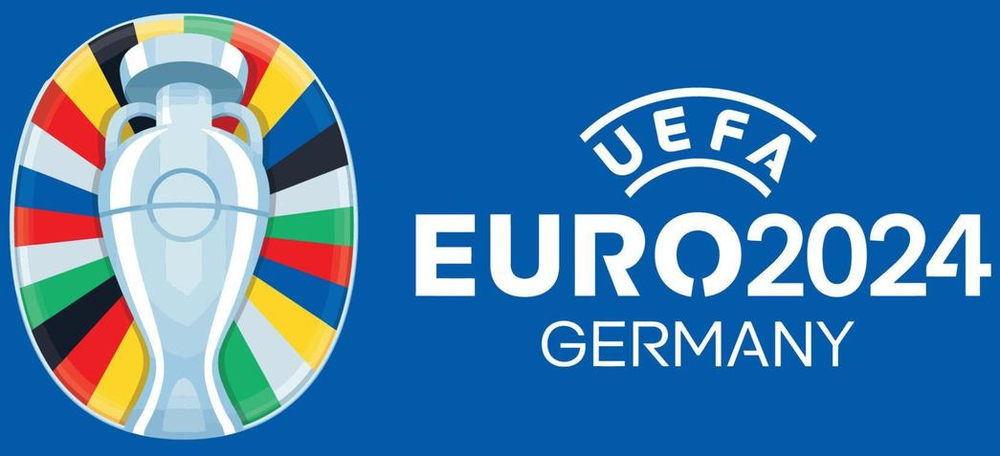

ROAD to BERLIN
La fanpage informativa del mayor evento futbolístico del continente
Definido el sorteo de grupos de la fase final de la Euro 2024
Noticia destacada
El sorteo, que se celebró el sábado 2 de diciembre en Hamburgo, ha decidido los grupos a expensas de saber quién son los últimos 3 clasificados vía play-off.
España, en un posible grupo de la muerte, debutará ante Croacia la tarde del sábado 15 de junio.
VER GRUPOSEl balón de la Euro determinará el fuera de juego y las manos
4 de diciembre de 2023 | MARCA
VER NOTICIA
'Play off' de la Euro 2024: cómo funciona y qué equipos van
21 de noviembre de 2023 | BeSoccer
VER NOTICIA